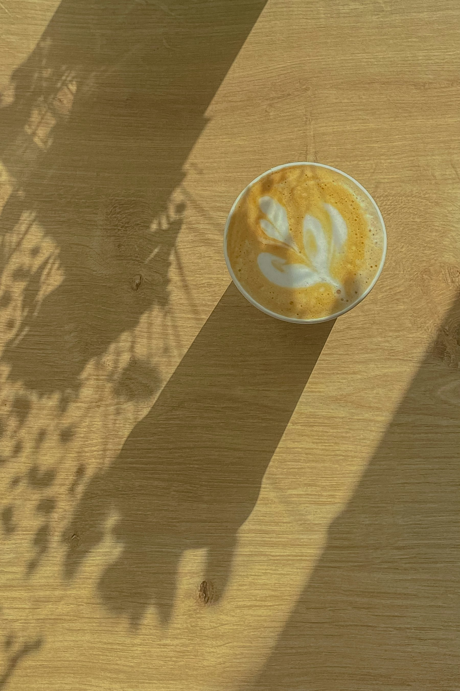
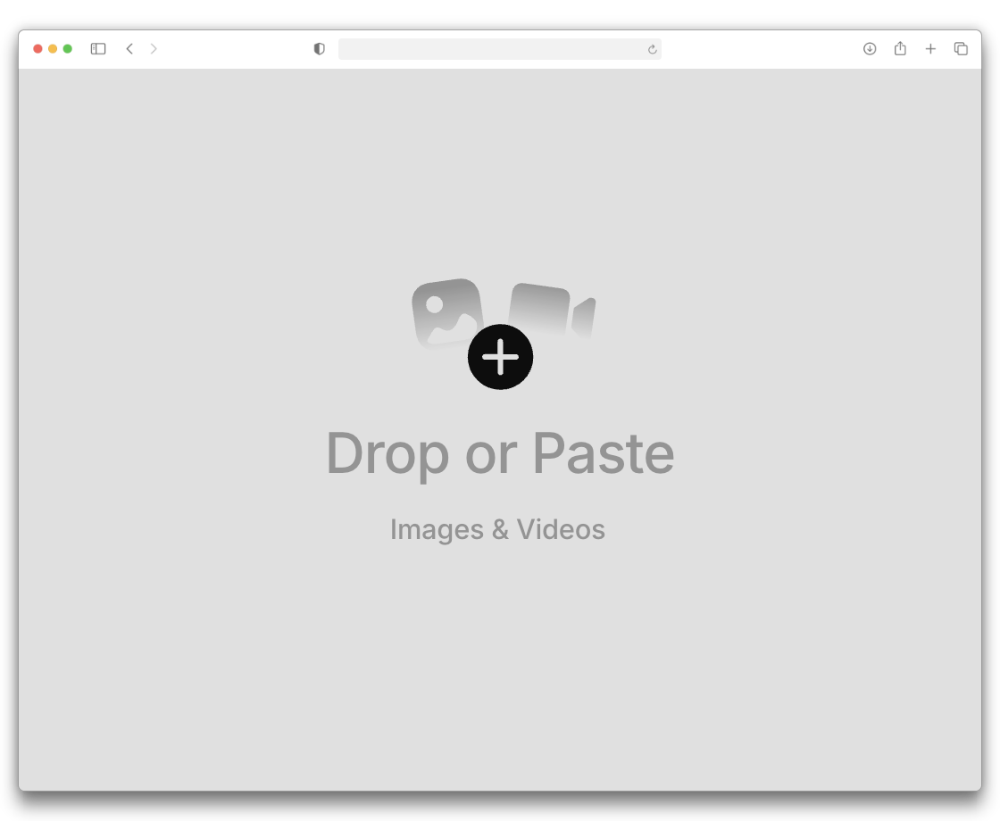
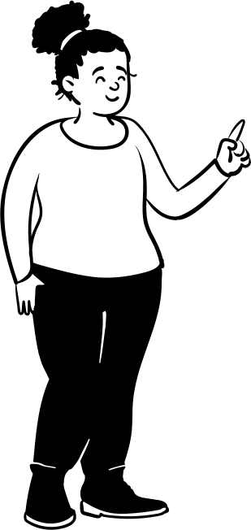

EXITOS 가치 정산서
No. 2026-1031-0042 · 2026.10.31 14:20
나도 몰랐던 내 가게의 진짜 가치
시설권리금₩ ?
바닥권리금₩ ?
영업권리금₩ ?
합계 ₩ ———,———,———
EXITOS
정산 대기
EXIT·OS·0042

EXITOS · SETTLEMENT PRINTER
EXITOS 가치 정산서
No. 2026-1031-0042 · 2026.10.31 14:20
시설권리금₩ ?
바닥권리금₩ ?
영업권리금₩ ?
합계 ₩ ———,———,———
EXITOS
정산 대기
EXIT·OS·0042
스크롤해서 금액을 확인해 보세요
How it works
01 · 진단
AI가 가게에 대해 하나씩 물어보고, POS·카드·배달 정산 파일을 올리면 겹치는 매출은 지우고 숫자마다 출처를 붙여요.
02 · 가치 정산서
평소와 다른 달은 주황색으로 표시하고, 시설·바닥·영업 권리금을 나눠 범위로 보여줘요. 막대를 눌러 이유를 확인해 보세요.
03 · 판매 페이지
누구나 보는 정보, 구독자가 보는 재무, 판매자가 승인해야 보는 권리금 구성까지 공개 범위를 나눠요.
04 · 인수인계
장비·거래처·계정·직원 정보가 12단계 체크리스트가 되고, 진행률을 판매자와 인수자가 같이 봐요.

exitos.kr/seller/diagnose가게 문을 연 지 얼마나 됐나요?
2022년 9월이요, 4년 됐어요
점주님이 직접 하시는 일은요?
원두 로스팅이랑 발주, SNS요
정리된 매장 정보
개업 2022.09 입력
월평균 매출 2,830만 확인 필요
카드 매출 2,310만 증빙
중복 제거 6건
최근 12개월 매출
막대를 눌러 보세요
권리금 구성
망원동 카페 A
카페 · 망원역 5분 · 개업 4년
월 매출
2,830만
영업이익
1,095만
회수
17.6개월
구독하면 볼 수 있어요
희망 권리금
1억 6,000만
눌러서 공개 범위가 바뀌는 걸 확인해 보세요
인수인계 진행률
42%
지금 할 일
One sheet, start to finish
판매자에게는 설명할 자료가 없어요.

ExitOS
자료 대조 · 정산 · 인수인계
중간에서 채워 넣는 곳

인수 자료
자료를 올리면 10분 안에 정산서를 받아볼 수 있어요.